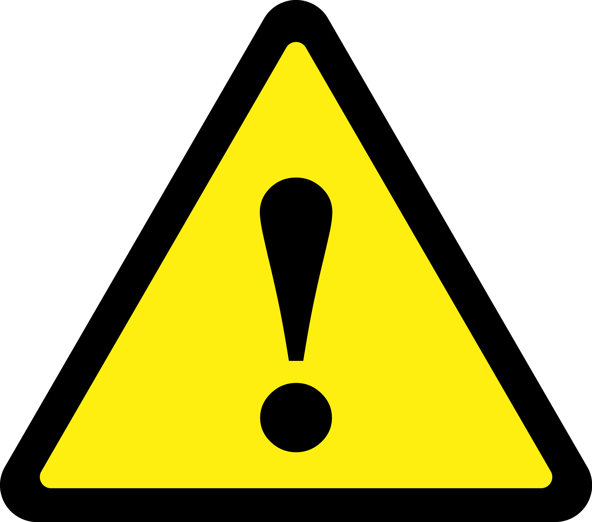

කාර්යක්ෂමතාව සඳහා ඉඟි
කාර්යක්ෂමතාව සඳහා ඉඟි

බලශක්ති කාර්යක්ෂම උපකරණ භාවිතා කරන්න
විදුලි පිරිවැය ඉතිරි කර ගැනීම සඳහා ඉහළ බලශක්ති කාර්යක්ෂමතාවයක් ඇති උපකරණ සඳහා ආයෝජනය කරන්න.
භාවිතයේ නොමැති විට විදුලි පහන් නිවා දමන්න
අනවශ්ය බලශක්ති පරිභෝජනය අවම කිරීම සඳහා කාමරයෙන් පිටවන විට සෑම විටම විදුලි පහන් නිවා දමන්න.

උපකරණ නිතිපතා නඩත්තු කිරීම
ඔබේ උපකරණ උපරිම කාර්යක්ෂමතාවයෙන් ක්රියා කිරීම සඳහා හොඳින් නඩත්තු කර ඇති බවට සහතික වන්න.

බලශක්ති කාර්යක්ෂම බල්බ භාවිතා කරන්න
සාම්ප්රදායික තාපදීප්ත බල්බ වෙනුවට අඩු ශක්තියක් වැය වන සහ දිගු කාලයක් පවතින LED හෝ CFL බල්බ සමඟ ප්රතිස්ථාපනය කරන්න.

ඩිමර් ස්විචයන් ස්ථාපනය කරන්න
ආලෝකයේ දීප්තිය සකස් කිරීමට සහ බලශක්ති පරිභෝජනය අඩු කිරීමෙන් ශක්තිය ඉතිරි කිරීමට ඩිමර් ස්විච භාවිතා කරන්න.

කාර්යක්ෂමව උයන්න
හැකි විට සාම්ප්රදායික උඳුන් වෙනුවට මයික්රෝවේව් උදුන්, ටෝස්ටර් උඳුන් හෝ මන්දගාමී කුකර් භාවිතා කරන්න, මන්ද ඒවා අඩු ශක්තියක් පරිභෝජනය කරයි.

භාවිතයේ නොමැති විට උපාංග විසන්ධි කරන්න
ෆැන්ටම් බලශක්ති පරිභෝජනය වැළැක්වීම සඳහා චාජර්, ඉලෙක්ට්රොනික උපකරණ සහ උපකරණ භාවිතයේ නොමැති විට ඒවා විසන්ධි කරන්න.

ස්වාභාවික ආලෝකය භාවිතා කරන්න
කෘතිම ආලෝකය මත යැපීම අඩු කිරීම සඳහා දිවා කාලයේ තිර රෙදි විවෘතව තබා ගැනීමෙන් ස්වභාවික දිවා ආලෝකයෙන් ප්රයෝජන ගන්න.
 ආරක්ෂිත පූර්වාරක්ෂාවන්
බලය අධික ලෙස පටවන්න එපා අලෙවිසැල්
අධික උනුසුම් වීම සහ ගිනි උවදුරු වළක්වා ගැනීම සඳහා එක් අලෙවිසැලකට බොහෝ උපාංග සම්බන්ධ කිරීමෙන් වළකින්න.

විදුලි උපකරණවලින් ජලය ඈත් කර තබන්න
විදුලි කම්පන වළක්වා ගැනීම සඳහා ජලය සහ විදුලිය කිසි විටෙකත් සම්බන්ධ නොවන බවට වග බලා ගන්න.

කිසිවිටෙක තෙත් දෑතින් ස්විචයන් ක්රියාත්මක හෝ අක්රිය නොකරන්න
ගීසරය, රෙදි සෝදන යන්ත්රය, මික්සර්/ග්රයින්ඩර් හෝ වෙනත් විදුලි උපකරණයක ස්විචය සක්රිය හෝ අක්රිය කිරීමට කිසිවිටෙක තෙත් අතක් භාවිතා නොකරන්න.

වැසි වැටෙන විට ප්ලග් පොයින්ට් අසල වින්ඩෝස් වසා දමන්න
වැසි වැටෙන විට එම ස්ථානයට ආසන්න කවුළුව විවෘතව තිබේ නම් වැසි බිංදු ප්ලග් පොයින්ට් එකට ඇතුළු විය හැකිය. ජල බිඳිති මගින් ප්ලග් පොයින්ට් අවදානමට ලක්විය හැක.

ගිගුරුම් සහිත වැසි ඇති වන විට ඉලෙක්ට්රොනික උපාංග ක්රියා විරහිත කරන්න
දැඩි ගිගුරුම් සහිත වැසි ඇති වන විට ගිනි අනතුරු වළක්වා ගැනීම සඳහා විදුලි උපාංග අක්රිය කිරීම හොඳය.

සජීවී වයර් සහ විදුලි කොටස් වලට නිරාවරණය වීම වැළැක්වීම
ඔබේ නිවස වටා විදුලි රැහැන් ගැලවී නොයන බවට වග බලා ගන්න. එවැනි වයර්වලින් ළමයින්ට ළඟාවිය නොහැකි ලෙස තබා ගන්න. මෙය මාරාන්තික විය හැක.

භාවිතයෙන් පසු උපකරණ විසන්ධි කිරීමට මතක තබා ගන්න
භාවිතයෙන් පසු උපකරණ විසන්ධි කිරීමට වග බලා ගන්න. අපි බොහෝ විට අපගේ උපකරණ විසන්ධි කිරීමට අමතක කරමු, මෙය අප විසින් සිදු කරන වඩාත්ම භයානක වැරදි වලින් එකකි.

MCB, ELCB, සහ Fuse වැනි අධි ධාරා ආරක්ෂණ උපාංග සවි කරන්න
විශේෂයෙන්ම මෝසම් කාලවලදී සහ තෙතමනය සහිත පරිසරයකදී විදුලි කම්පන වලින් ආරක්ෂා වීමට ELCB භාවිතා කිරීම සුදුසුය.